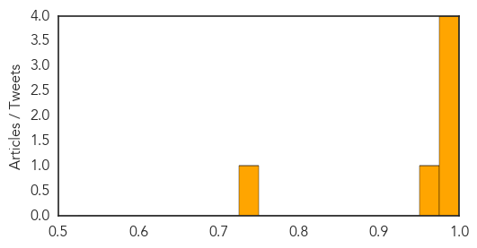
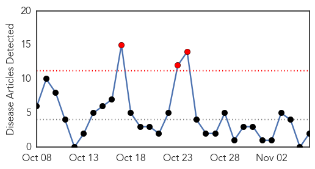

Chikungunya
30-Day Web Trend
0 alerts, 0 warnings
30-Day Twitter Trend
4 alerts, 0 warnings
Article Locations
Article Confidences
Top Articles:
- 0.997
- One new local chikungunya case confirmed
- 0.997
- Mosquito-borne chikungunya virus still a concern for American travelers, CDC says
- 0.995
- Chikungunya outbreak progresses in Caribbean, Central and South America
- 0.995
- Chikungunya: US travelers to the Caribbean and Central and South America still at risk this fall and winter
- 0.967
- Chikungunya continues as cause for concern
- 0.733
- Heads of Government’s move to prioritise health issues a positive one
Top Tweets:
-
No tweets found for Nov 06, 2014
Cholera
30-Day Web Trend
3 alerts, 0 warnings

30-Day Twitter Trend
2 alerts, 0 warnings
Article Locations

Article Confidences

Top Articles:
Top Tweets:
-
No tweets found for Nov 06, 2014